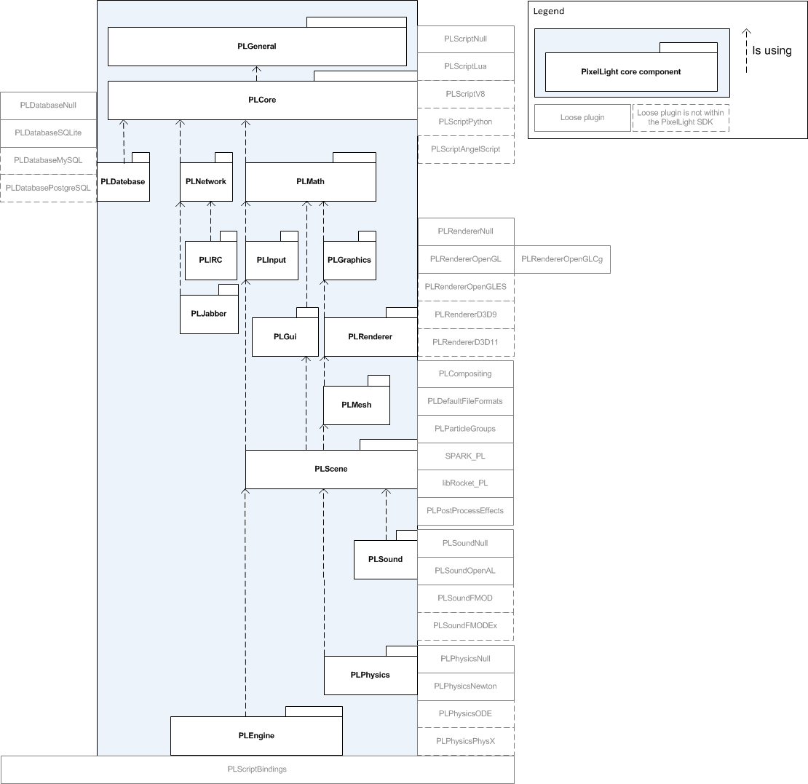

The PixelLight framework
consists of different sub components for a better overview and increased productivity. Some sub projects can be used stand
alone. The following diagram shows how the components interact. The grey components are backends/plugins and usually not accessed directly by a programmer. The dotted grey components are not officially part of the PixelLight SDK because they are not yet ready for productive usage - but they can be found within the PixelLight repository.

Core components
- PLGeneral:
This is the most basic part and can be seen as a kind of tool library
where you will find a lot of universal features like linked lists and so on.
- PLCore:
Component providing framework core components like the event system, RTTI or the base classes of the application framework.
- PLMath:
Basic mathematic tool library.
- PLDatabase:
Basic database library. Backend based.
- PLGraphics:
Basic graphics tool library. (color classes, image class and so on)
- PLIRC:
IRC network protocol implementation.
- PLJabber:
Jabber network protocol implementation.
- PLGui:
The PixelLight SDK comes with an own platform independent GUI
(graphical user
interface) system which enables you to create your own tools or even
ingame menus in a quite comfortable way without using platform
dependent functions.
- PLInput: Input component.
- PLRenderer:
The renderer component. Backend based.
- PLScene:
Implements a scene graph and a realtime compositing system
- PLSound: Adds sound functionality. Backend based.
- PLPhysics: Adds physics functionality. Backend based.
- PLEngine:
This is the PixelLight framework itself which uses the projects mentioned above PLGeneral, PLGui etc.
Optional plugins
- PLCompositing:
Fixed functions based compositing steps (for legacy GPUs) and shaders based compositing steps
- PLPostProcessEffects:
A lot of post process effects
- PLImageLoaderEXR:
Image loader plugin for OpenEXR (www.openexr.com),
'exr'-extension) high dynamic range images
- PLDefaultFileFormats:
Various PixelLight default file format plugins adding loader implementations